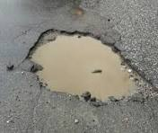
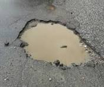
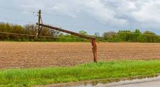
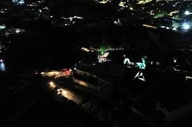
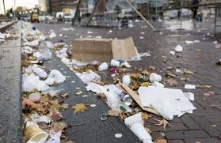
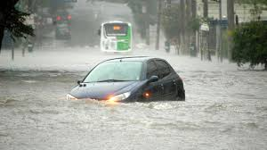
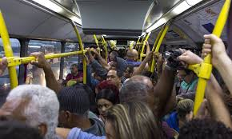

Buracos nas Ruas
A situação das ruas da cidade tem se agravado com o aumento de buracos e crateras, dificultando a locomoção e colocando em risco a segurança de motoristas e pedestres.
Status: Pendente
A situação das ruas da cidade tem se agravado com o aumento de buracos e crateras, dificultando a locomoção e colocando em risco a segurança de motoristas e pedestres.
A falta de energia elétrica em algumas áreas tem gerado transtornos, afetando o dia a dia dos moradores e prejudicando serviços essenciais, como a saúde e o comércio local.
A iluminação pública deficiente tem contribuído para a insegurança em várias regiões da cidade, especialmente durante a noite, tornando as ruas mais vulneráveis a crimes.
A coleta de lixo tem sido irregular em várias partes da cidade, o que resulta no acúmulo de resíduos e compromete a saúde pública e a qualidade de vida dos cidadãos.
A infraestrutura de drenagem da cidade não tem sido suficiente para lidar com as chuvas fortes, resultando em alagamentos frequentes e causando danos às propriedades e aos estabelecimentos comerciais
O transporte público da cidade enfrenta sérios problemas de lotação, atraso e falta de pontualidade, afetando o bem-estar dos passageiros e a eficiência do sistema de mobilidade urbana.
